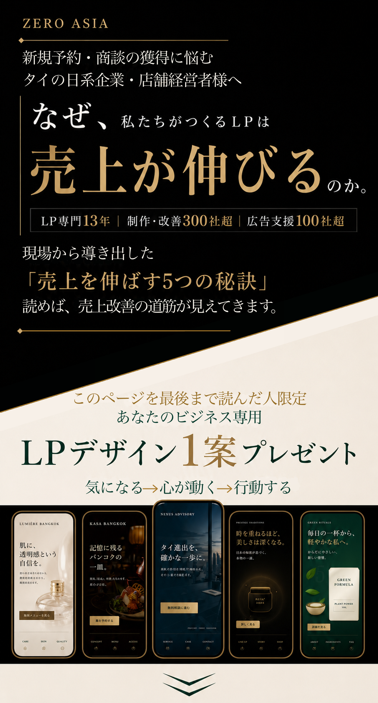
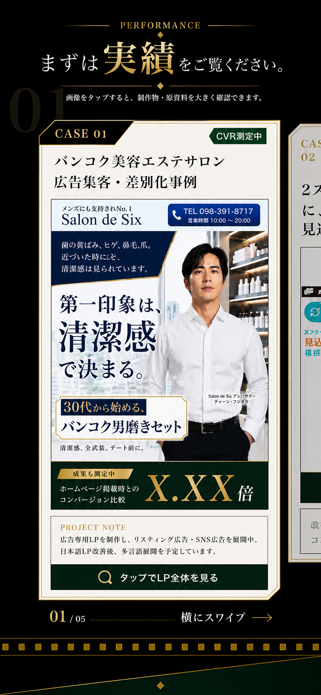
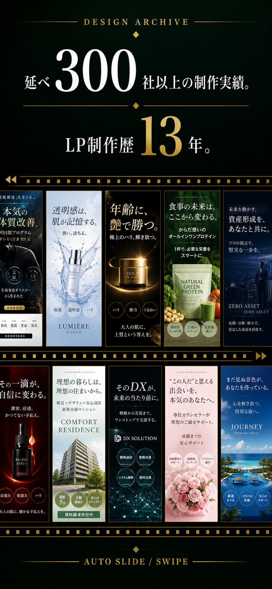

まずは実績をご覧ください。
売れるLPの秘密をお伝えする前に、
まずは私たちの設計によって
数字がどう変わったのかお見せします。


広告費を増やす前に、
見直すべき場所があります。
現在、タイ・バンコクの日系企業や店舗の多くは、広告のリンク先に通常のホームページを使用しています。
それは日本人向けだけではありません。タイ人や欧米人への広告でも、それぞれの顧客に合わせた専用LPを作っている例はほとんど見かけません。
しかし、ホームページとLPでは、そもそもの役割が違います。ホームページは、会社や店舗の全体を幅広く案内する場所です。一方、LPは、一つの顧客層と一つの商品に絞り、その人が知りたいことを正しい順番で伝え、問い合わせへ導くための専用ページです。
マーケティングは、小さな確率の積み重ねです。例えば、問い合わせ率が1％から2％になれば、同じアクセス数でも、問い合わせ数は2倍になります。
私たちの事業でも、LPと広告を組み合わせることで、問い合わせと売り上げが大きく変わることを経験しました。
そして、これまで関わってきたクライアントのビジネスでも、LPの訴求、構成、ストーリー、動線を変えることで、実際に数字が動く場面を何度も経験してきました。
日本市場で磨かれてきた構成、コピー、デザイン、広告動線のノウハウを、タイ・バンコクの市場と顧客に合わせて作り込む。
そうして生まれた高品質なLPは、まだ専用LPが少ないタイ・バンコクだからこそ、競合との明確な違いを作る新しい武器になるかもしれません。
もし今、広告やSNSを続けても成果が伸びていないなら、問題は集客そのものではなく、その先にある「広告の受け皿」にあるのかもしれません。